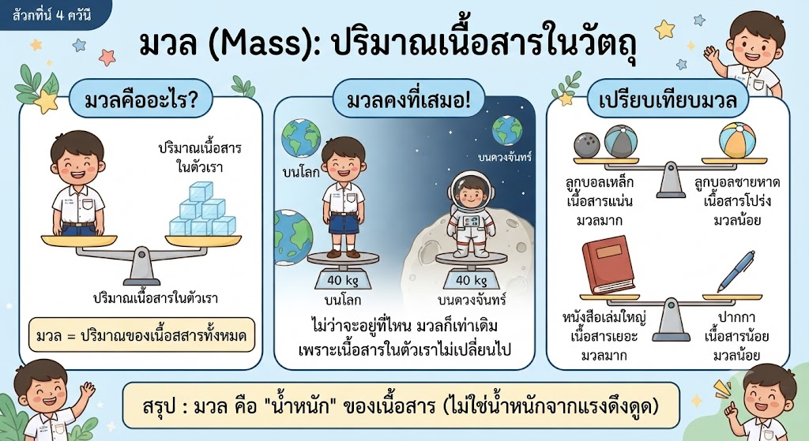
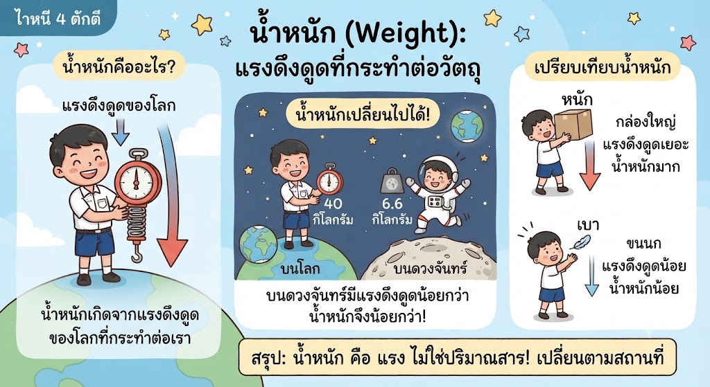
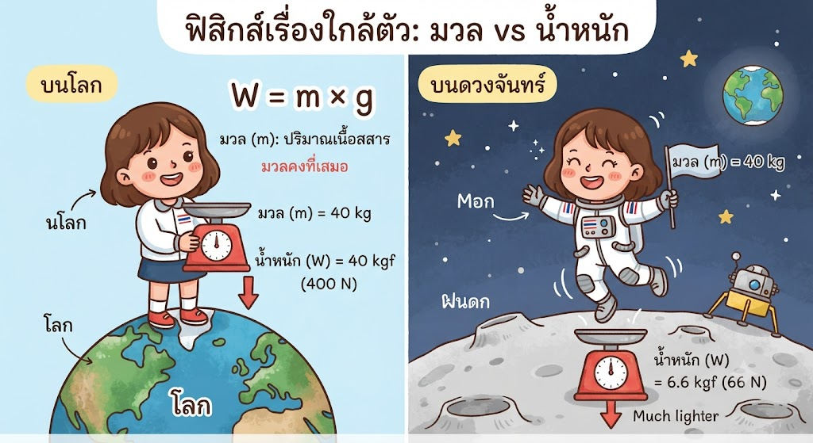

ฟิสิกส์ไม่ใช่เรื่องไกลตัว แรงโน้มถ่วงของโลก (W = m × g) คือแรงดึงดูดเข้าสู่ศูนย์กลาง มวล (m) คือปริมาณเนื้อสสารที่มีค่าคงที่เสมอไม่ว่าจะอยู่ที่ใดบนจักรวาล แต่น้ำหนัก (W) คือแรงที่โลกดึงเรา ซึ่งจะเปลี่ยนไปตามค่าความเร่งโน้มถ่วง (g) ในแต่ละสถานที่
แสงเดินทางเป็นเส้นตรง เมื่อกระทบวัตถุจะจำแนกตัวกลางได้ 3 แบบตามการผ่านของแสง: 1. โปร่งใส (ยอมให้แสงผ่านได้เกือบทั้งหมด มองเห็นทะลุชัดเจน) 2. โปร่งแสง (ยอมให้แสงผ่านได้บางส่วน ทำให้ภาพพร่ามัว) 3. วัตถุทึบแสง (แสงผ่านไม่ได้เลย จึงเกิดเป็นเงาด้านหลัง) ขนาดของเงายังขึ้นอยู่กับตำแหน่งวัตถุเทียบกับแหล่งกำเนิดแสง
เขียนโดย พระจอมเกล้าติวเตอร์